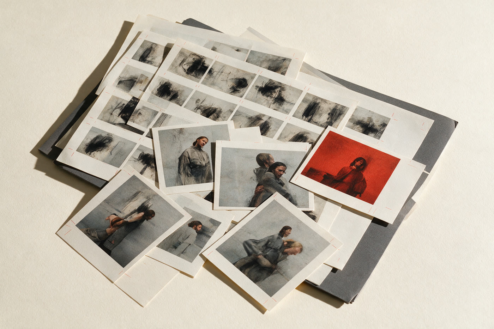
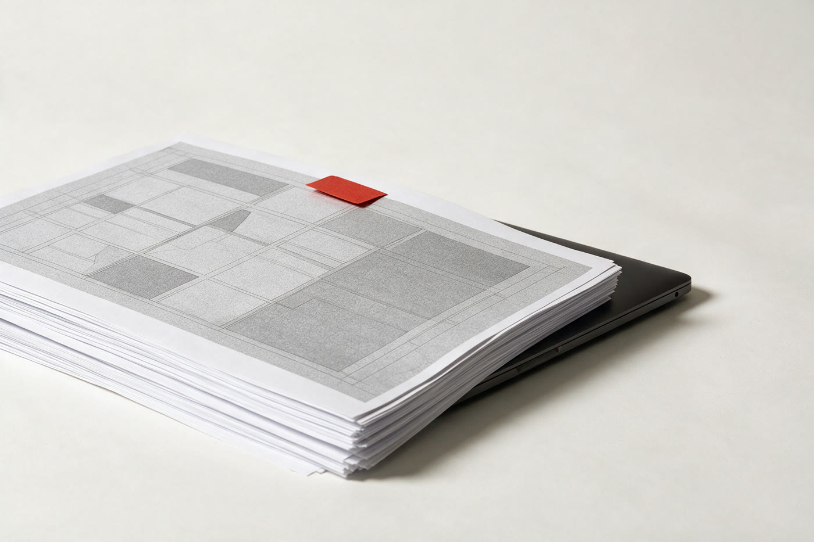
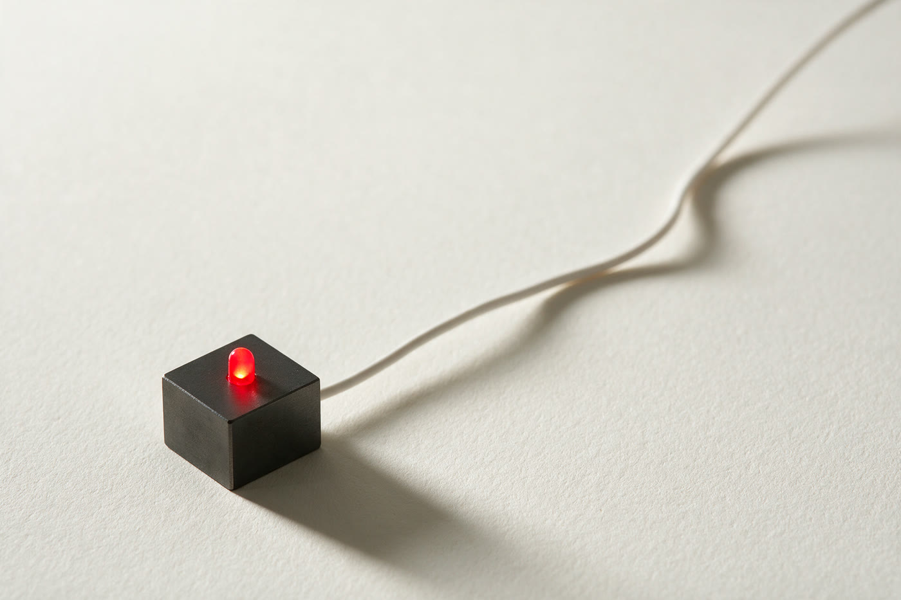

Services · Périmètre écrit
Cinq métiers,
un seul interlocuteur.
Le périmètre est écrit avant de commencer. Les allers-retours sont inclus, et vous repartez avec les sources et les accès à votre nom.
Les cinq métiers
Cinq façons
de travailler ensemble.
Un seul interlocuteur du cadrage à la livraison. Chaque métier peut se prendre seul ou s'enchaîner, avec un périmètre écrit à chaque fois.
Identité de marque
Nom, logotype, système typographique, couleurs, guide d'usage. Un système qui tient sur un menu, une carte de visite et une devanture.
Voir le détail
Direction artistique
Print, éditions, campagnes, photographie. Je tiens le ton visuel sur la durée, pas seulement sur la première campagne.
Voir le détail
Site & e-commerce
Design, intégration WordPress ou Shopify, SEO technique, performance, formation. Vous gardez la main sur le contenu.
Voir le détail
Contenu & réseaux
Ligne éditoriale, gabarits réutilisables, production régulière. Le but est que vous puissiez continuer sans moi.
Voir le détail
Agents IA
Audit des tâches répétitives, automatisations, assistants internes, formation. On mesure le temps gagné, sinon on arrête.
Voir la page agents
Comment ça
se passe.
Trois temps, un point de validation à chaque étape. Rien ne part en production sans votre accord écrit.
Tout ce qui est produit vous appartient. Aucun verrou, aucune dépendance à mon compte.
Les questions
qui reviennent.
Les quatre qui arrivent à chaque premier appel.
Comment démarre un projet ?
Par un appel de trente minutes : ce que vous vendez, ce qui coince, ce que vous voulez obtenir. J'envoie ensuite un périmètre écrit, et le projet démarre quand il est validé.
Combien de temps pour un site complet ?
Trois à six semaines pour un site vitrine de cinq à dix pages, hors production de contenu. Le délai dépend surtout de la vitesse à laquelle les textes et les visuels arrivent.
Qui fait les textes ?
Vous, ou moi en option. Dans les deux cas, je fournis la structure et les niveaux de titre : c'est ce qui fait la différence entre une page qui convertit et une page qui décrit.
Et après la livraison ?
Vous partez avec les sources, les accès et une documentation. Une maintenance est possible, jamais obligatoire. Je réponds sous 48 h ouvrées, même après la fin du projet.
Vous ne savez pas par quel bout commencer ?
Décrire mon besoin